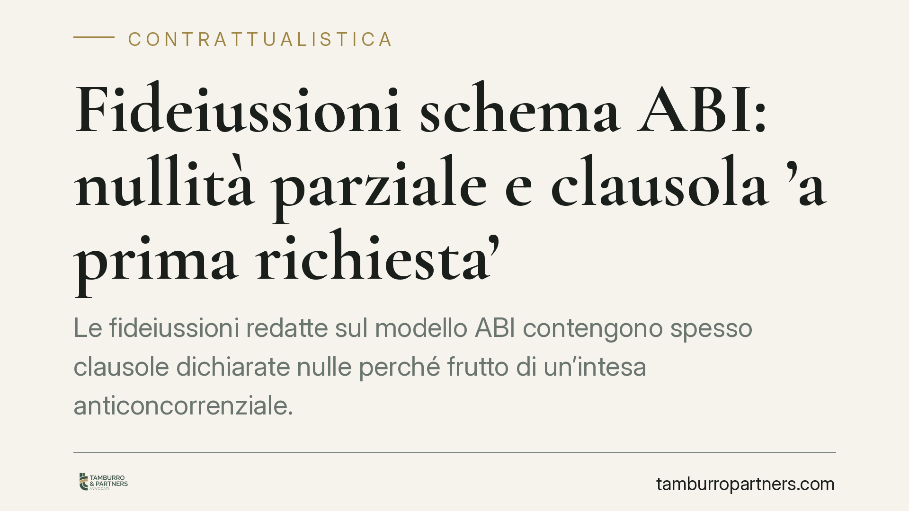

Fideiussioni schema ABI: nullità parziale e clausola 'a prima richiesta'
Le fideiussioni redatte sul modello ABI contengono spesso clausole dichiarate nulle perché frutto di un'intesa anticoncorrenziale. La Cassazione a Sezioni Unite ha chiarito che la nullità colpisce le singole clausole illecite, non l'intera garanzia. Per fideiussori e imprese resta un ampio spazio di difesa, a condizione di verificare testo e date dei contratti sottoscritti.

Il contesto
Molti contratti di fideiussione bancaria sono stati redatti riproducendo lo schema predisposto dall'ABI (Associazione Bancaria Italiana). La Banca d'Italia, con il provvedimento del 2005 sullo schema contrattuale ABI per la fideiussione a garanzia delle operazioni bancarie, ha accertato che alcune clausole violavano la disciplina a tutela della concorrenza di cui all'art. 2 della Legge n. 287/1990, in quanto espressione di un'intesa restrittiva tra gli istituti.
Le clausole sotto osservazione sono tre: la clausola di reviviscenza (che fa rivivere la garanzia dopo pagamenti poi revocati), la clausola di sopravvivenza (che mantiene l'obbligo del garante anche in caso di invalidità dell'obbligazione principale) e la deroga all'art. 1957 c.c. (che libera il fideiussore se il creditore non agisce tempestivamente contro il debitore).
Inquadramento normativo
Il nodo è stato sciolto dalla Corte di Cassazione a Sezioni Unite con la sentenza n. 41994 del 30 dicembre 2021. La Corte ha stabilito che le fideiussioni che riproducono le clausole frutto dell'intesa anticoncorrenziale sono affette da nullità parziale: sono nulle le singole clausole illecite, mentre il resto del contratto — e quindi la garanzia nel suo complesso — di regola resta valido ed efficace.
È una scelta di equilibrio. Non si travolge l'intero rapporto, ma si espungono le pattuizioni che derivano dall'intesa vietata. Resta salva l'eventuale prova che le parti non avrebbero concluso il contratto senza quelle clausole (art. 1419, primo comma, c.c.), ipotesi però di difficile dimostrazione pratica.
Quanto all'art. 1957 c.c., occorre una precisazione tecnica. La norma prevede che il fideiussore resti obbligato dopo la scadenza dell'obbligazione principale solo se il creditore agisce entro sei mesi contro il debitore e prosegue diligentemente l'azione. Questo termine opera con riferimento alla fideiussione a tempo determinato; per la fideiussione a tempo indeterminato il regime è diverso e il decorso dei termini va valutato in relazione alle condizioni di esigibilità del credito. La clausola ABI che derogava a questa tutela è tra quelle colpite da nullità.
La clausola 'a prima richiesta'
Un profilo spesso trascurato riguarda la clausola 'a prima richiesta' e senza eccezioni. La sua presenza può incidere sulla qualificazione stessa del contratto: può trasformare la fideiussione in una garanzia autonoma (il cosiddetto contratto autonomo di garanzia), figura che segue regole diverse da quelle della fideiussione tipica e in cui il garante paga prima e discute poi.
La qualificazione non è automatica: dipende dalla volontà delle parti e dal complessivo assetto del contratto. Per questo la lettura del singolo testo è decisiva e non si può ragionare per formule standard.
Implicazioni pratiche
Per chi ha firmato una fideiussione bancaria, il quadro apre margini concreti. La presenza delle clausole censurate, se riconducibile allo schema ABI, può essere fatta valere per ottenere l'eliminazione delle pattuizioni illecite e, in particolare, per recuperare la tutela liberatoria dell'art. 1957 c.c.
Rileva anche la data del contratto. Sul piano probatorio, per le fideiussioni coeve all'accertamento del 2005 il provvedimento dell'autorità costituisce un elemento di prova privilegiato dell'intesa a monte. Per i contratti più risalenti o successivi, il collegamento con l'intesa va ricostruito con maggiore attenzione, dimostrando la riproduzione delle clausole uniformi.
Cosa fare in concreto
- Recupera il testo integrale della fideiussione e verifica la presenza delle clausole di reviviscenza, sopravvivenza e della deroga all'art. 1957 c.c.
- Controlla la data di sottoscrizione: incide sull'efficacia probatoria del provvedimento dell'autorità e sull'onere di ricostruire l'intesa.
- Individua se è presente la clausola 'a prima richiesta', perché può mutare la natura stessa della garanzia.
- Non attendere l'escussione: valuta per tempo l'eventuale azione, anche in via di accertamento, prima che la banca agisca per il recupero.
- Richiedi una verifica tecnica del contratto prima di aderire a piani di rientro o transazioni, che possono comportare la rinuncia alle eccezioni.
La materia è fortemente casistica: l'esito dipende dal testo concreto, dalla qualificazione della garanzia e dalla prova dell'intesa. Una valutazione preliminare del singolo contratto è il passaggio da cui partire.
Contributo informativo a cura di Tamburro & Partners - Avv. Giuseppe Tamburro. Non costituisce parere legale.
Ogni contratto ha il suo equilibrio.
Se vuoi una revisione delle clausole o una redazione su misura, scrivi allo studio. Ti rispondiamo entro un giorno lavorativo.